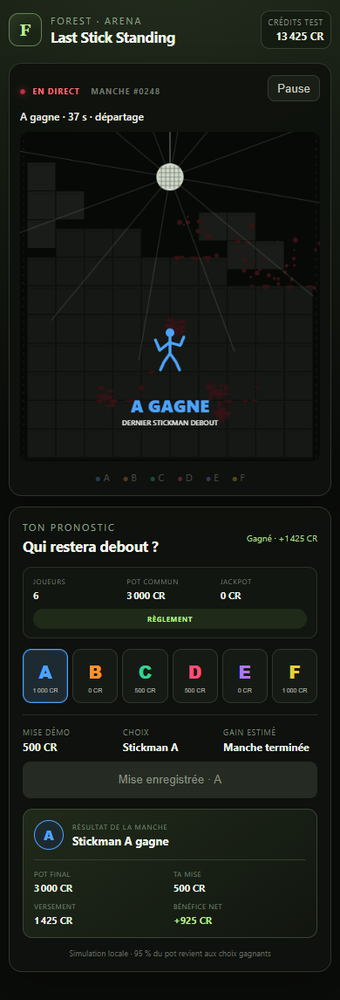

Observe le pot
Les mises arrivent en direct. Chaque couleur offre une part différente du pot commun.
UN PARI · SIX COULEURS · UN SURVIVANT
Choisis ton stickman. Regarde les blocs construire l’arène et tente de rester debout jusqu’à la dernière seconde.
Démo gratuite · crédits fictifs · aucune connexion requise

▶ LANCER LA DÉMOCOMMENT JOUER
Les mises arrivent en direct. Chaque couleur offre une part différente du pot commun.
Les positions restent cachées jusqu’au verrouillage. Ton stickman est ensuite marqué d’un halo.
Les blocs chutent, les stickmen grimpent et se poussent. Seuls les choix placés sur le survivant sont payés.
PROTOCOLE DE TEST
Les couleurs sont mélangées après la fermeture des mises. Une mort simultanée déclenche une mort subite affichée à tous. Cette v0.1 utilise uniquement des adversaires et des crédits simulés.
Tu es prêt ?